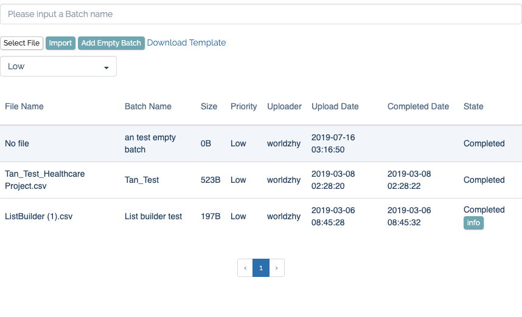

CSV 上传下载管理模块
上传
功能点
上传大小限制 前后端都要有
文件类型检查
前后端都要有，防止恶意程序注入示例文档 提供CSV文档模板，供用户下载和参考
type 设置 对不同类型 CSV 进行隔离，按照 CSV type 指派不同验证队列和使用队列
文档物理存储 管理好上传的 CSV 在服务器中的物理存储位置，方便进行事后验证，提供给用户进行再次下载或者其他操作，负载均衡情况下，考虑共享盘 EFS 等情况 EFS vs S3: https://www.missioncloud.com/blog/resource-amazon-ebs-vs-efs-vs-s3-picking-the-best-aws-storage-option-for-your-business/
异步队列验证数据并导入表中 对上传文档 fields 数量和字段有效性检测，判断文档健康状态，通过检测后导入实际要使用数据表中(多任务，多监听进程，守护进程自动重启，防止单一任务卡壳)
表结构参考
CREATE TABLE
csv_upload(
idint(11) NOT NULL AUTO_INCREMENT,
csv_original_namevarchar(255) DEFAULT NULL,
csv_namevarchar(255) DEFAULT NULL,
file_pathvarchar(255) DEFAULT NULL,
check_typevarchar(255) DEFAULT NULL,
check_statusvarchar(255) DEFAULT NULL,
check_reporttext,
uploader_idint(11) DEFAULT NULL,
upload_datedatetime DEFAULT NULL,
completed_datedatetime DEFAULT NULL,
insert_reporttext,
csv_sizevarchar(32) DEFAULT NULL,
PRIMARY KEY (id),
KEYcsv_type(check_type)
) ENGINE=InnoDB DEFAULT CHARSET=utf8UI 参考 
下载
功能点
异步生成 后台队列异步生成 CSV 文档(多任务，多监听进程，守护进程自动重启，防止单一任务卡壳)
文档安全 文档路径不可直接暴露在 web 服务器 public 下，文档的下载必须走 api 接口，不能交友 web 服务器直接做静态文件传输
文档物理存储 考虑是否有负载均衡情况，要使用共享盘 EFS，让文件能跨服务器
表结构参考
CREATE TABLE
csv_list(
idint(11) NOT NULL AUTO_INCREMENT,
fileNamevarchar(255) DEFAULT NULL,
typevarchar(255) DEFAULT '',
descriptiontext,
current_countint(11) DEFAULT NULL,
countint(11) DEFAULT NULL,
useridint(11) DEFAULT NULL,
pathvarchar(255) DEFAULT NULL,
statevarchar(255) DEFAULT NULL,
created_atdatetime DEFAULT NULL,
updated_atdatetime DEFAULT NULL,
PRIMARY KEY (id)
) ENGINE=InnoDB DEFAULT CHARSET=utf8UI 参考